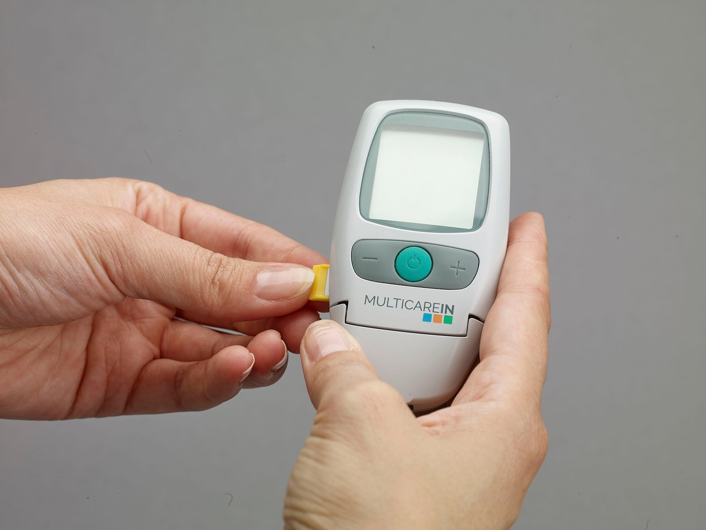
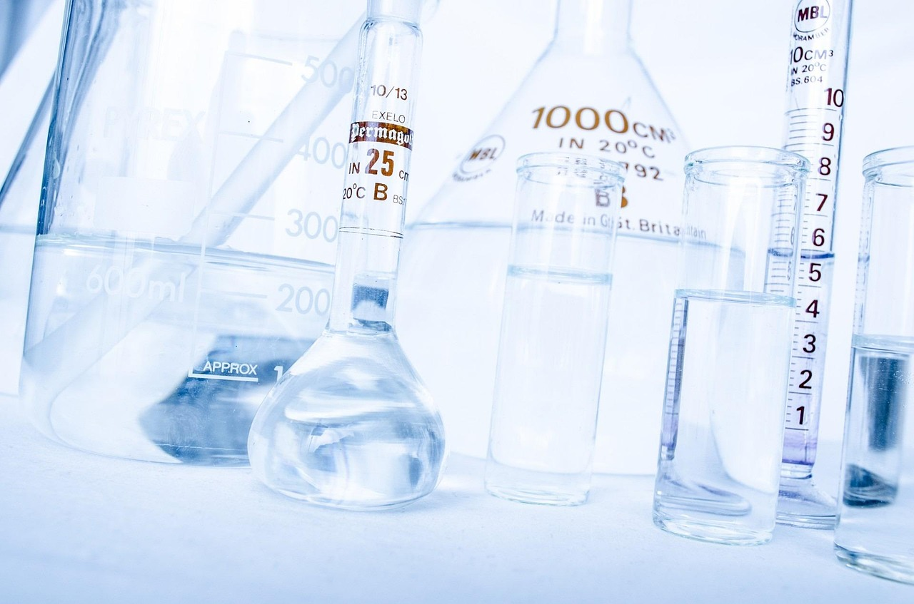

Total Dissolved Solids (TDS) is the most critical metric for anyone using pure water for cleaning. Learn what it measures, how to test it, and why 0 TDS is the gold standard.
Total Dissolved Solids (TDS) refers to the concentration of dissolved particles in water. These particles can include minerals, salts, metals, and organic matter. In the context of cleaning, TDS is the single most important factor determining whether water will dry "clear" or leave behind visible spots and streaks.
When ordinary tap water evaporates from a surface, it only leaves behind H2O molecules. Everything else that was dissolved in the water—the TDS—stays behind on the surface. These are the "water spots" you see on windows, car paint, and glass.

Typical tap water contains a variety of dissolved substances, including:
The "hardness" of your water is largely determined by the amount of calcium and magnesium it contains. The higher these levels, the more difficult it is to achieve a spot-free finish without deionization.
The relationship between TDS and cleaning quality is direct: the higher the TDS, the more residue is left behind. Professionals categorize water purity based on its TDS reading, measured in parts per million (ppm):
One of the hidden benefits of 0 TDS water is its increased solvency. Because deionized water has been stripped of its minerals, it is chemically "unbalanced" and seeks to return to a neutral state by dissolving minerals and dirt it comes into contact with. This makes it a more effective cleaning agent than tap water, often eliminating the need for soap or detergents.

Measuring TDS is simple and inexpensive. Professionals use a handheld digital TDS meter, which measures the electrical conductivity of the water. Since dissolved solids are ionic (electrically charged), the meter can accurately estimate the concentration of solids based on how well the water conducts electricity.
To get an accurate reading:
Don't leave your reputation to chance. Use ASTM-certified deionized water to ensure your cleaning results are always spot-free and professional.
Learn More in Our Lab Water Guide →Not necessarily. Distillation removes many solids but can carry over some volatile organic compounds. Deionization specifically targets ions (dissolved solids) and is the most reliable way to achieve a consistent 0 TDS reading for cleaning.
While not toxic in small amounts, deionized water is not intended for drinking. It lacks beneficial minerals and can have a flat taste. It is specifically processed for industrial, laboratory, and professional cleaning applications.
If you are a professional, you should test your water at the start of every job. DI resin has a finite lifespan, and once it is exhausted, the TDS will "break through" and rise rapidly. Testing ensures you never leave spots on a client's property.
No. Carbon filters are excellent at removing chlorine and some organic chemicals (improving taste and odor), but they do not remove dissolved minerals. Only deionization (DI) or reverse osmosis (RO) can significantly lower TDS.
Mineral buildup on solar panels (scaling) can reduce their efficiency by blocking sunlight. Using 0 TDS water ensures the panels stay clear and operate at maximum output without the risk of long-term mineral etching.